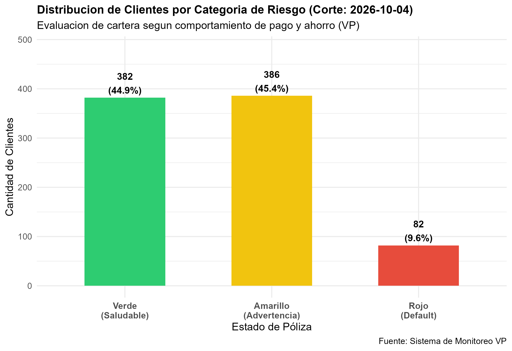
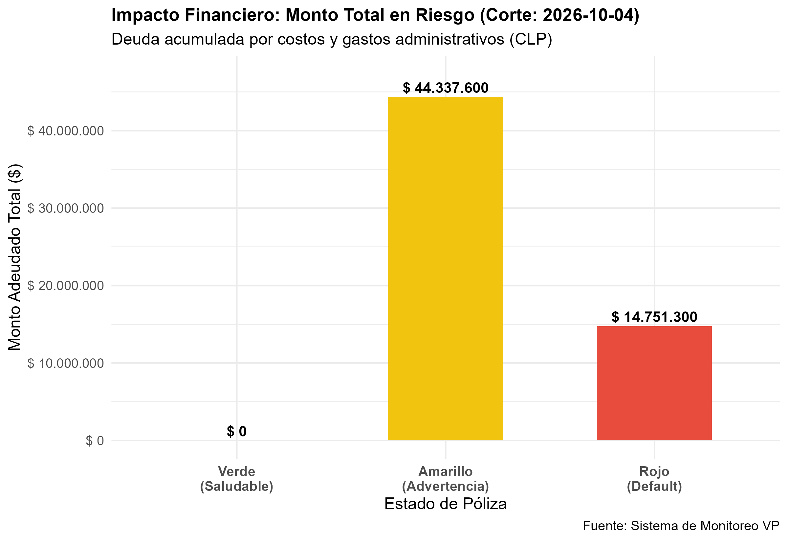

graph TD
subgraph 1. Ingesta Multi-Archivo
A1[clientes_info.csv<br/>RUT, Sueldo, Prima]
A2[polizas_deuda.csv<br/>RUT, Primas, Gastos]
A3[vias_pago.csv<br/>RUT, Vía Pago, Costo]
end
subgraph 2. Control de Historial
B{¿Ya procesados?<br/>historial_archivos_procesados.txt}
A1 --> B
A2 --> B
A3 --> B
B -- No --> C[Lectura y Carga CSV]
end
subgraph 3. Motor R (Join & Reglas)
C --> D[Inner Join por RUT]
D --> E[Calculo Deuda Total]
E --> F[Semaforo de Riesgo VP]
end
subgraph 4. Salida & Persistencia
F --> G1[Reporte Excel Multi-Hoja .xlsx]
F --> G2[Persistencia Historica .csv / .rds]
F --> G3[Graficos Analiticos /graficos]
end
Sistema de Alerta y Monitoreo Semanal para la Prevención de Pérdida en Coberturas por VP
Proyecto Final - Curso Finanzas en R
1 Descripción de la Solución y Alcance
1.1 Problema de Negocio
En la industria aseguradora, los productos de seguro con ahorro (Valor Póliza - VP) corren el riesgo de caducar cuando el saldo de ahorro no logra cubrir los costos de administración y las primas adeudadas (\(VP \le 0\))[cite: 5]. Esto deja al cliente desprotegido ante siniestros y genera pérdidas financieras para la compañía[cite: 5].
1.2 Alcance del Sistema
El sistema automatiza la ingesta semanal de datos operativos (información del cliente, deudas y vías de pago), consolidando la información mediante el RUT[cite: 4, 5, 6]. Aplica reglas de negocio deterministas para proyectar los meses faltantes antes del default y clasifica a la cartera en un semáforo de riesgo (Saludable, Advertencia, Crítico)[cite: 4, 5, 6].
2 Arquitectura del Data Pipeline y Diagrama de Flujo
El flujo de procesamiento semanal de datos está estructurado según la siguiente secuencia[cite: 3, 4]:
3 Resultados y Métricas de Cartera
A continuación se presenta la tabla resumen ejecutiva con el estado de la cartera para la fecha de corte actual[cite: 4, 5]:
| semaforo_riesgo | Clientes | Porcentaje (%) | Prima Total (\()| Deuda Total (\)) | |
|---|---|---|---|---|
| 🔴 Crítico (Caduco - Default) | 82 | 9.6 | 15.414.000 | 14.751.300 |
| 🟡 Advertencia (Próximo a Caducar) | 386 | 45.4 | 78.083.000 | 44.337.600 |
| 🟢 Saludable | 382 | 44.9 | 78.741.000 | 0 |
4 Visualización Analítica (ggplot2)
4.1 Distribución de Clientes por Semáforo

4.2 Impacto Financiero y Monto en Riesgo

5 Model Card (Marco Vetiver)
- Nombre del Proceso: Motor de Monitoreo Semanal de Pérdida de VP[cite: 4, 5].
- Versión: 1.0.0 (MVP Batch)[cite: 4, 5].
- Entorno y Dependencias: Gestionado dinámicamente con
renv(renv.lock)[cite: 1, 5]. - Entradas: Tres archivos CSV unificados por la clave primaria
RUT[cite: 4, 5, 6]. - Lógica Principal:
- Deuda Total = Costo Adeudado + Gastos Adeudados[cite: 4, 6].
- Proyección a Default = \(\max(0, 3 - \text{primas\_pendientes})\)[cite: 4, 6].
- Mantenimiento (MLOps): Idempotencia mediante control de registros en
historial_archivos_procesados.txt[cite: 3, 4].